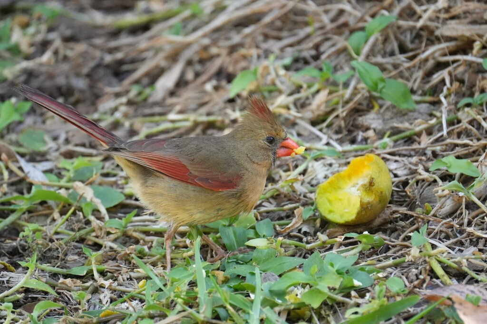

- The male northern cardinal is one of the most recognizable birds in the eastern U.S. — bright red all over, with a pointed crest and a black mask around a stout orange bill.
- The female is easy to overlook by comparison: warm buff-brown with red highlights, but every bit a cardinal, crest and all.
- Unlike most songbirds, the female sings too, often answering the male in a back-and-forth from the shrubs.
- The thick, cone-shaped bill is a seed-cracking tool, which is why cardinals are such reliable visitors to feeders and seed-bearing plants.
Bright red overall, with a pointed crest, black face mask, and stout orange-red bill.
Warm buff-brown with reddish tinges on the crest, wings, and tail, and the same orange bill.
A tall crest and a short, thick, cone-shaped bill.
Clear, whistled songs — phrases like 'cheer-cheer-cheer' and 'birdy-birdy-birdy' — sung by both sexes, plus a sharp metallic 'chip' note.
A crested songbird with a heavy orange bill — vivid red if a male, soft brown with red accents if a female. Listen for clear, whistled 'cheer-cheer-cheer' and 'birdy-birdy-birdy' phrases from both sexes.
Mainly seeds and grains, plus fruits, berries, and insects — especially in summer, when insects feed the growing young.
In shrubs, hedges, and woodland edges, often near the ground. The male's red is easy to spot; listen for the loud, clear whistles of both sexes.
Year-round resident, active by day in every season.
Simply enjoy them. A feeder with seeds is the easiest way to welcome cardinals, but they do just fine on natural food in the park.


- © Rhonda Olschefskie (CC-BY-NC), via iNaturalist
- © Heather Pickard (CC-BY-NC), via iNaturalist
- © catalaniclaire (CC-BY-NC), via iNaturalist